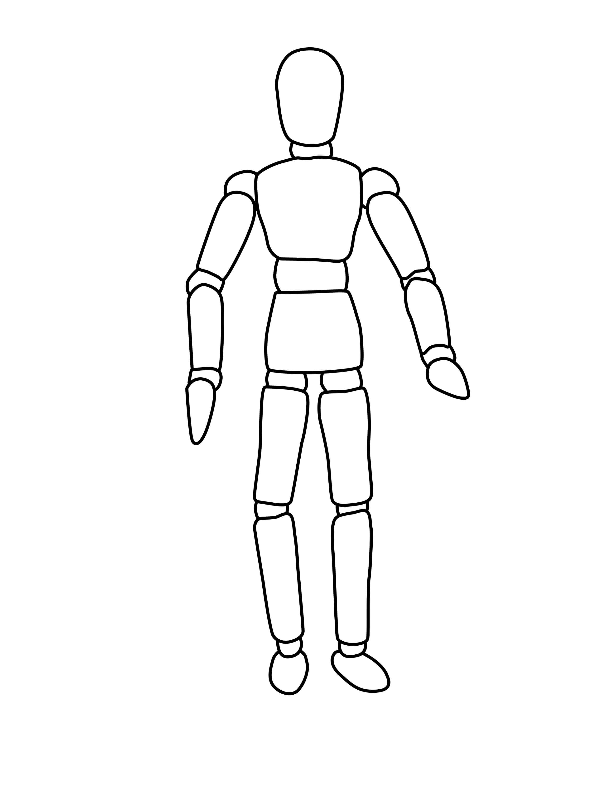

Louis Augereau
24 ans
/
Dev Web en herbe
13 rue Edouard Peltier
85800 La-Roche-sur-Yon
06.83.02.58.60
louis.a@tuta.io


Expérience
-
Documentaliste audiovisuel
Paris Numérique
Mairie de Paris
2017- Indexation et archivage de vidéos
- Encodage, upload & suivi statistique (YouTube / Dailymotion)
- Analyse et traitement de demandes d'images
-
Médiathécaire
Médiathèque des Chartreux
Issy-les-Moulineaux
2016- Désherbage du catalogue musical (10.000 disques)
- Valorisation du fonds musical
- Participation aux acquisitions et au catalogage des documents
- Service public : accueil et orientation des usagers, animations
-
Agent des bibliothèques
Bibliothèque « La Conserverie »
Saint-Gilles-Croix-de-Vie
2015- Catalogage, récolement et réparation des livres
- Service public : accueil et orientation des usagers, animations
- Préparation d'une exposition temporaire :
«Panorama de la littérature de terroir»
-
Auxiliaire administratif
Etablissement Français du Sang
Versailles
2012/16- Accueil, orientation & inscription des donneurs de sang
- Contact régulier avec les laboratoires et centres de prélèvement
- Préparation du matériel informatique et traitement des données
Formation
-
Développeur Web
Arinfo
La-Roche-Sur-Yon
2018- Langages : HTML/CSS, Javascript, PHP, MySQL, Java
- Environnement serveur & hébergement de site web
- Gestion de projet Web & Webdesign
- Formation labellisée « Grande Ecole du Numérique »
-
Documentaliste multimédi@s
INA
Bry-sur-Marne
2017- Mémoire professionnel : « L'harmonisation des pratiques documentaires au sein d'une institution publique : évolution(s) et utilisation(s) d'un outil de gestion de ressources numériques à la Mairie de Paris »
-
DUT InfoCom - Métiers du Livre
Paris Nanterre
Saint-Cloud
2013/16- Mémoire professionnel : « Quelle place pour la musique en médiathèque aujourd'hui ? »
-
Baccalauréat Littéraire
Jules Ferry
Versailles
2009/12- Section Européenne Anglais
- Séjours linguistiques : Chine, Espagne, Royaume-Uni
Compétences
DAM
- Carthame
- Orphée
- Phraseanet
WEB
- HTML/CSS
- Dreamweaver
- Javascript
PAO
- Bridge
- InDesign
- Photoshop
VIDEO
- FC Pro X
- Premiere
- Media Encoder